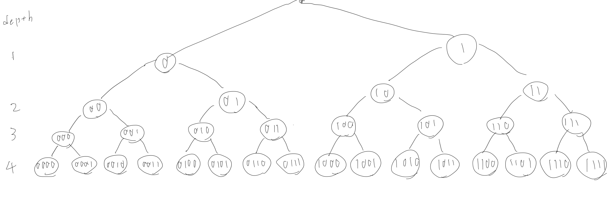

How we implemented expressive search criteria with minimum effort.
Author: Sora Suegami
In this post, I describe how we implemented our new PKSE library. As described in its README.md, our library provides Public-key encryption with conjunctive and disjunctive keyword search (PECDK) [1] as an underlying scheme. The PECDK supports conjunction and disjunction of multiple keywords as search criteria, which is rather expressive in the research field of public-key searchable encryption (PKSE). However, to provide the same level of functionality as SQL, more complex search criteria need to be addressed. We filled this gap without implementing new PKSE schemes by devising how to construct the keywords to be encrypted in the PECDK scheme.
Specifically, our library supports prefix and range search. The former encrypts a string and retrieves the encryption whose string has the specified prefix, and the latter encrypts an unsigned integer and retrieves the encryption whose integer is within the specified range. In the following, I explain those background designs and implementations.
Prefix search
In the prefix search, a string is decomposed into bytes, and a pair of each byte and its index forms a single keyword. For example, a string "abcde" will be keywords [(0,"a"), (1, "b"), (2,"c"), (3,"d"), (4, "e")]. In our library, this keyword construction is implemented in Rust as below.
1 2 3 4 5 6 7 8 9 10 11 | |
idx and byte represent the index and the byte, respectively. The region_name is a fixed, application-specific string used to distinguish the same string encrypted for different applications. The byte 1 is also necessary to distinguish an empty keyword, namely all-zero bytes. The function concat_multi_bytes concats all of the given bytes. In this way, with minor exceptions, our implementation is consistent with the above description.
The trapdoor for the prefix search is for a conjunction of keywords derived from a prefix string. For instance, the trapdoor for the prefix "abc" corresponds to the conjunction of keywords [(0,"a"), (1, "b"), (2,"c")]. Since the keywords of string with that prefix should include the same keywords, the trapdoor can match the appropriate string encryptions with the PECDK scheme.
Range search
The range search is more complex than the prefix search, but more interesting! Our first idea for the range search is to divide the entire range of integers into certain smaller ranges and encrypt the range containing the target integer as keyword. As an example, consider an integer \(x\) within the range \([0, 50)\). We first divide that entire range into ranges of size 10, i.e., \([0,10), [10,20), [20,30), [30,40), [40,50)\). The encryption of \(x=15\) will be the encryption of the keyword \([10,20)\) as \(x \in [10, 20)\) holds. The trapdoor for the itenger within the range \([10,30)\) will correspond to a disjunction of keywords \([10,20), [20,30)\).
Although the above approach is easy to implement, it has two downsides.
- It cannot cover an exponentially-large range.
- It cannot generate a trapdoor for a range whose size is not a multiple of the size of the divided range (e.g., 10 in the above example).
To overcome them, we adopt an approach proposed in [2]. In a nutshell, it constructs a binary tree corresponding to the entire range and encrypts a node of each height as a keyword. For example, for an 4-bit integer \(x\), the following binary tree is considered. The encryption of \(9=1001_2\) will be for the keywords \(((1, 1_2), (2, 10_2), (3, 100_2), (4, 1001_1))\). Notably, the number of keywords to be encrypted is only \(t\) for the exponentially-large range \([0,2^t)\) in this scheme! 
The trapdoor is generated for the disjunction of the nodes that cover all leafs within the specified range. In the above example, nodes \((0101_2, 011_2, 10_2, 110_2)\) covers all leafs within the range \([0101_2, 1101_2]\), i.e., \([5, 13]\). It implies that the integer within that range should have at least one of the nodes \((0101_2, 011_2, 10_2, 110_2)\). Therefore, the disjunction of these nodes matches the appropriate integer encryption. Furthermore, there are no restrictions as in our initial idea regarding the position and size of the range to be specified. However, the minimum set of cover nodes is not sufficient to protect the privacy of search criteria because its size is not consistent for two different ranges with the same size. (E.g., the range \([0,8]\) has the same size with \([5, 13]\), but its minimum set of cover nodes is just two nodes, namely \((0_2, 1000_2)\)!) The author of [2] solves this problem by considering a "minimal universal cover [2]", which is "a cover with a number of nodes and depths that is the same for any two ranges of the same size [2]". Such cover nodes leaks only the size of the specified range. Our implementation produces it following the procedures in Appendix A of [2], as below.
1 2 3 4 5 6 7 8 9 10 11 12 13 14 15 16 17 18 19 20 21 22 23 24 25 26 27 28 29 30 31 32 33 34 35 36 37 38 39 40 41 42 43 44 45 46 47 48 49 50 51 | |
Reference
- Zhang, Y., Li, Y., & Wang, Y. (2019). Secure and efficient searchable public key encryption for resource constrained environment based on pairings under prime order group. Security and Communication Networks, 2019.
- Faber, S., Jarecki, S., Krawczyk, H., Nguyen, Q., Rosu, M., & Steiner, M. (2015, September). Rich queries on encrypted data: Beyond exact matches. In European symposium on research in computer security (pp. 123-145). Springer, Cham.